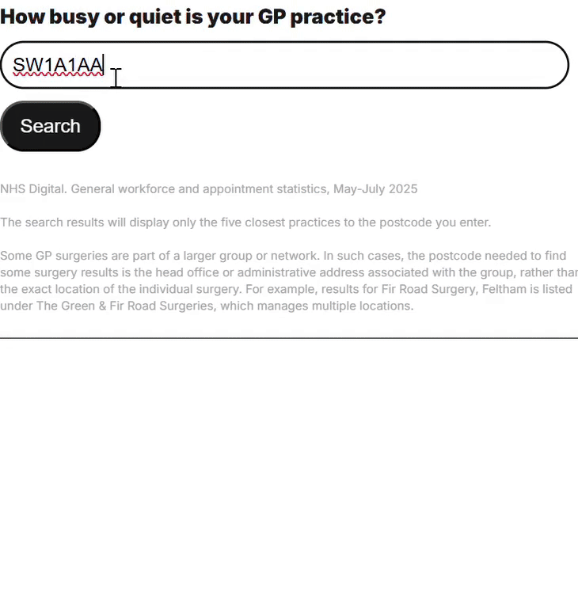

NHS data tracker tools
The NHS data tracker tools turn complex health statistics into clear, interactive dashboards. Using postcode APIs alongside Flourish, ai2html and custom JavaScript, the project delivers dynamic visualisations that are fully responsive across mobile and desktop.
